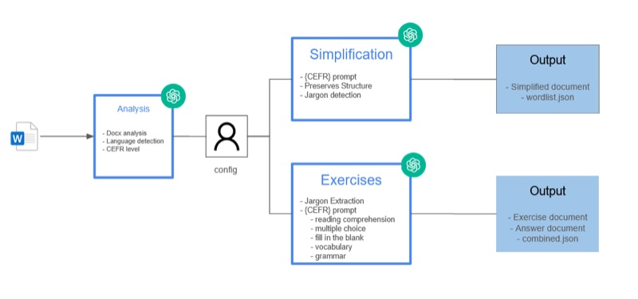
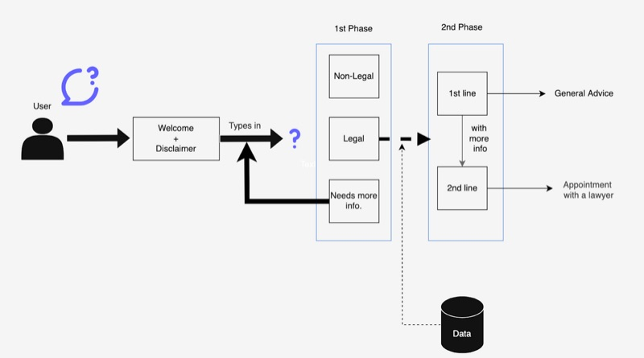
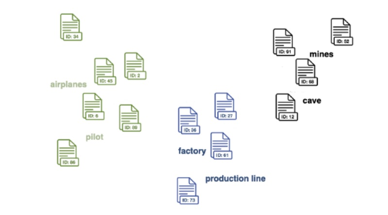
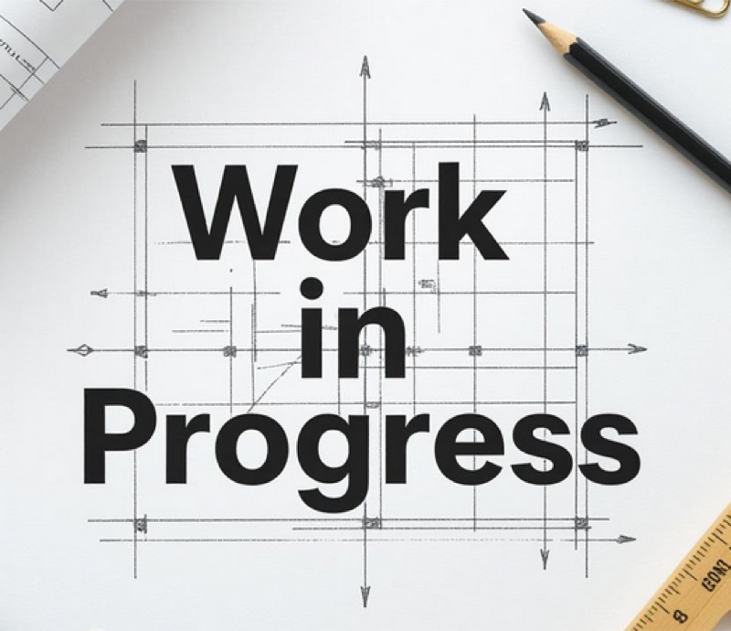
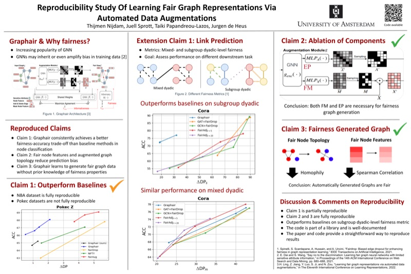
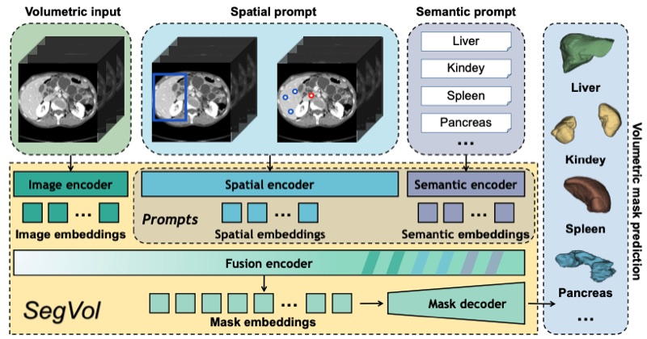
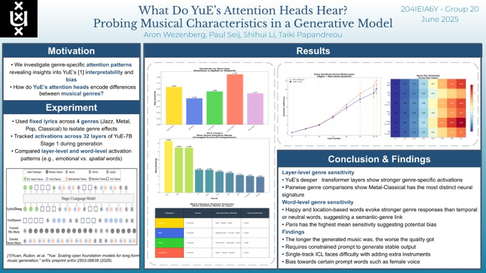
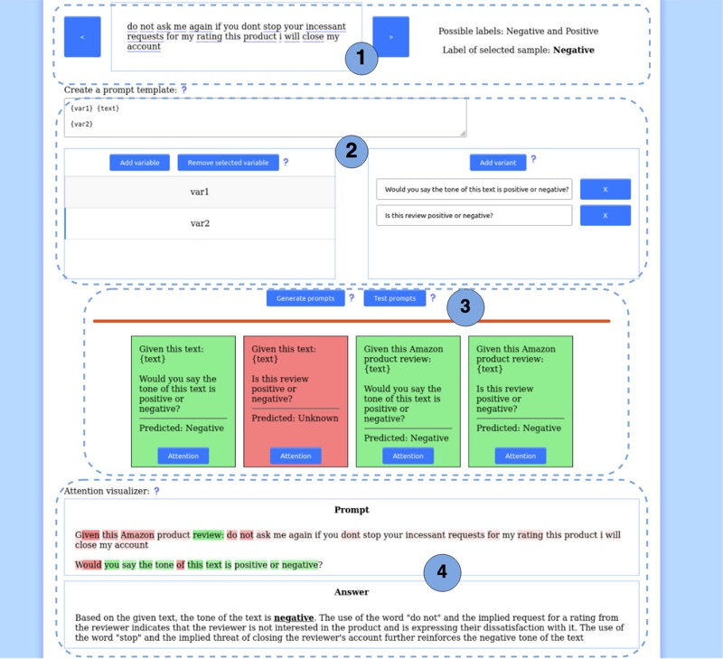

My Projects
A collection of work showcasing my skills in AI and development.
Internal Back Office Platform
Everything arriving through a company website handled through to a signed quote, a sent invoice and a matched bank payment. Built end to end as the sole engineer, with its own e-signing flow, open-banking reconciliation and cookieless analytics.
AI Assistant Inside a Client's Azure Tenant
A Microsoft Teams assistant that triages an inbox, drafts replies and schedules meetings, running entirely inside the customer's own Azure tenant. Every outward action is a code-enforced propose-then-confirm: the model drafts, a human presses send.
Risk-Assessment Tool for a Dutch Insurer
A 20-tab Excel risk assessment rebuilt as a web tool. An AI proposes an answer for each field with its source and exact quote, a human accepts or rejects, and the scoring is computed in code so the verdict stays reproducible.
AI Code Security Scanner
A one-day prototype: a read-only scanner that reviews a codebase for security problems. Against a purpose-built vulnerable app it found all 6 planted vulnerabilities plus 2 real ones, with zero false positives.

Educational Content Generation Platform
An end-to-end GenAI-powered platform that transforms documents into CEFR-leveled language learning materials with automated text simplification and exercise generation.


Identifying Workplace Accidents in News Articles
Developed a high-accuracy NLP pipeline using fine-tuned BERT models to automatically identify and classify workplace accidents in large-scale news corpora, achieving 0.89 F1-score for research at TNO.

Jargon-Aware Medical Text Simplification
Research on automatic biomedical jargon detection and LLM-based text simplification. Evaluates cross-dataset transfer learning, establishes baselines on PLABA and MedReadMe datasets, and explores prompting strategies for medical text accessibility.

Graphair: Fair Graph Augmentation for Representation Learning
Comprehensive reproduction and extension of Graphair, a fairness-aware graph augmentation method using adversarial learning, contrastive learning, and reconstruction regularization to reduce bias while preserving informativeness in GNNs.

Medical Multimodal Segmentation Using Foundation Models
Comprehensive reproduction and extension of SegVol, a foundation model for 3D medical image segmentation. Evaluates geometric robustness to rotations and proposes novel group equivariant patch embeddings for enhanced rotation invariance.

What Do YuE's Attention Heads Hear?
Probing musical characteristics in YuE, a generative music model. Investigates genre-specific attention patterns across Jazz, Metal, Pop, and Classical, revealing deeper layers' stronger activations and semantic-genre links, while uncovering biases toward certain prompt words.

A Dashboard for Optimizing Prompts in Large Language Models
Interactive dashboard for prompt engineering optimization in LLMs. Features dataset visualizations, prompt experimentation tools, attention score insights, and performance evaluation through confusion matrices to enhance text classification accuracy.